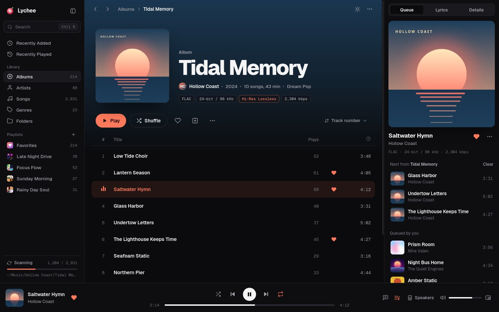
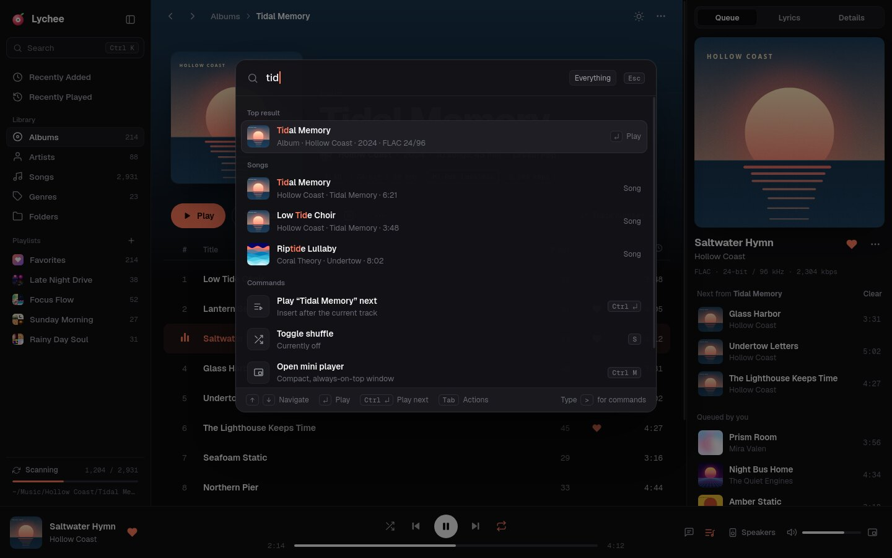

hover: Command paletteD
Flow
modern pro, keyboard-firstA refined three-pane workhorse (navigation, content, context) with the polish of tools like Linear and Raycast, a Ctrl+K command palette for everything, and dynamic color used with restraint.
Signature details
- Ctrl+K palette: search + commands
- Album pages with an art-tinted hero
- Queue / Lyrics / Details side panel
- Live library-scan progress
Trade-offs
- Most familiar, so least distinctive
- Can drift toward "looks like Spotify"
- Best for big libraries, quickest to build